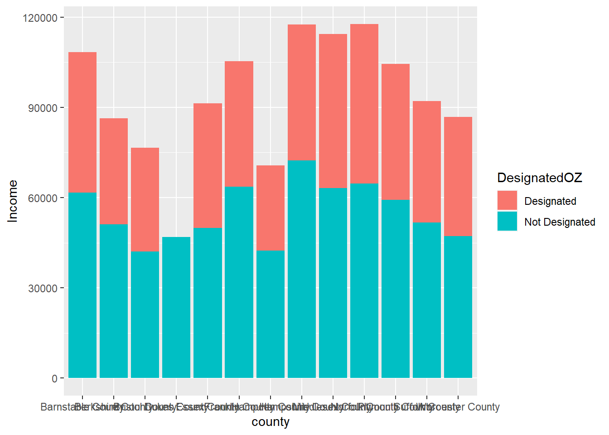

library(readxl)
library(tidyverse)
library(DataExplorer)Exploratory Data Analysis with 
11.S954 Applied Data Science for Cities
Overview
This week’s Lab Exercise focuses on the dplyr package and the ggplot2 package. It also begins to engage with data visualization best practices by demonstrating how to create and interpret a variety of graphics.
Exploratory data analysis (EDA) is a phase of a larger data science workflow that emphasizes getting to know the data before rushing to analyze it. EDA typically involves the creation and interpretation of graphics in order to build familiarity and gain fundamental insights that can inform more sophisticated analyses later on. There are several overarching goals of exploratory data analysis, including:
- To determine if there are any problems with your dataset.
- To determine whether the question you are asking can be answered by the data that you have.
- To begin formulating an answer to your question.
Our study topic today
In the 2017 Tax Cuts and Jobs Act, a new federal incentive was introduced to encourage investment in low-income and undercapitalized communities. States were given the chance to select specific census tracts as Opportunity Zones, where investors could enjoy tax benefits for their eligible investments. Although, there’s been a lot of curiosity among practitioners and researchers regarding how effective the program is and whether the designations made by governors were successful.
If you are interested in the locations of these Opportunity Zones, you can check out this map. The brown geometries reflected on the map are census tracts, which are statistical subdivisions of a county for collecting demographic and socioeconomic information about inhabitants. Find a familiar place for you, and see which areas have been designated as Opportunity Zones.
Download data and load packages
Now please navigate to Urban Institute’s website about Opportunity Zones, find the link “Download tract-level data on all Opportunity Zones”, and download this dataset to your “data” folder within your Lab 2 project folder.
Start a new .qmd (or .Rmd) file and remove the template texts.
To stay organized, we should load packages at the beginning of our markdown document. These are the three packages we are going to use today.
Read and examine our data
The file we’ve downloaded is in the Microsoft Excel “.xlsx” format. But it’s not a problem at all. We can use read_xlsx from the readxl package to read these files.
ozs <- read_xlsx("data/urbaninstitute_tractlevelozanalysis_update01142021.xlsx")
In the “Environment” panel on the top-right of your R interface, you should see the new object ozs. Click it to preview its content. (Alternatively, you can preview it by typing View(ozs) in your console). This data lists tracts nationwide that are eligible to be designated as Opportunity Zones, whether they have been designated as Opportunity Zones or not, along with essential Census demographic data that describe these tracts. You can also see this dataset has 42,178 observations (rows) and 27 variables (columns).
Here are the column definitions:
- geoid: combined state, county, tract FIPS (Federal Information Processing Standards) code this is a unique identification number for each census tract. If it is the first time you heard of tracts, they are sub-areas of a county defined for the purpose of taking a census.
- state: the name of the state
- county: the county name
- Designated: 1 when an eligible tract was designated as an opportunity zone, and NA where the tract was not designated.
- Type: category for OZ designation
- Population: total population of the tract
- PovertyRate: poverty rate
- medhhincome: median household income
- medrent: median gross rent (per month)
- medvalue: median house value
- vacancyrate: residential vacancy rate
- unemprate: unemployment rate
- pctwhite: White non-Hispanic population (%)
- pctblack: Black non-Hispanic population (%)
- pctHispanic: Hispanic and Latino population (%)
- Metro: tract in a metropolitan area
What questions are you considering when you are looking at this dataset? For example, here are something I’m interested to know that may already be on your mind:
- How many of these eligible census tracts are designated as Opportunity Zones, and how many are not designated? What is the situation at the federal, state, and county levels?
- Are there any distinguishable differences in economic conditions between designated and not designated census tracts? Differences in terms of poverty rate, vacancy rate, median household income, demographics, etc.
Initial data cleaning
The Urban Institute has coded the designated variable as either taking a value of 1 when designated, or NA when not. We can recode the NA values in DesignatedOZ for legibility. In the following code, we use the dplyr function: mutate to modify DesignatedOZ in place. We replaced the numbers with texts since the NA and 1 here have no mathematical meaning.
ozs <- ozs |> mutate(DesignatedOZ =
ifelse(is.na(DesignatedOZ), "Not Designated", "Designated"))This modification will make it much easier for us to make a quick count of both types of areas.
ozs |>
count(DesignatedOZ) # A tibble: 2 × 2
DesignatedOZ n
<chr> <int>
1 Designated 8764
2 Not Designated 33414Or, a cross-tabulation of both types of areas by state.
ozs |>
count(state, DesignatedOZ)# A tibble: 108 × 3
state DesignatedOZ n
<chr> <chr> <int>
1 Alabama Designated 158
2 Alabama Not Designated 677
3 Alaska Designated 25
4 Alaska Not Designated 43
5 American Samoa Designated 16
6 Arizona Designated 168
7 Arizona Not Designated 702
8 Arkansas Designated 85
9 Arkansas Not Designated 435
10 California Designated 879
# ℹ 98 more rowsThere are a few columns (such as SE_Flag) that we won’t need for this analysis. We can use select in dplyr function to select a subset of columns to work on. select allows you to retain specified columns. If there is a minus sign in front, that means to drop these specified columns.
ozs <- ozs |> select(-c(dec_score, SE_Flag, pctown, Metro, Micro, NoCBSAType))One of the characteristics tracked in the Urban Institute data is the median household income for each tract. We might question whether there’s a difference in the median household income for designated and not-designated census tracts. Let’s see if we can calculate the mean of the median household income values:
mean(ozs$medhhincome)[1] NAIt returns NA. But it doesn’t indicate an issue with our code. The reason for this is the presence of missing values in this column. When dealing with numerical variables, NA values affect calculation results because we can’t decide if the missing values are larger or smaller than the others and we don’t know how to calculate them.
Take another look at the ozs data. Sort the medhhincome column by clicking the little triangles appearing on the column name. Drag down to the bottom of the dataset, then you will see quite a few of NAs in the Census demographic columns.
How many missing values are there, and how many would be a hurdle for my analysis? It will be great to have a sense of completeness in terms of what proportion of a field actually holds data. DataExplorer is a handy tool that offers functions to quickly understand the completeness of datasets.
DataExplorer::plot_missing(ozs)
plot_missing calculates the proportion of missing values in a given variable, and makes some judgemental calls of whether the missing is significant, indicated by “Good”, “OK”, and “Bad”. (Check out the documentation by typing ?plot_missing in your console. What are the default ranges for these three categories?) Overall, most of our columns have a very small percentage of missing values (less than 1%) and would not create significant representative issues. However, when performing calculations, we need to include the na.rm = TRUE argument, indicating that we are calculating based on the available 99%.
mean(ozs$medhhincome, na.rm = TRUE)[1] 42152.76Note: R can do the same thing in different ways. This is especially true as you get further and further into the weeds - some niche packages are able to perform general tasks, in more or less verbose ways. For example, in dplyr language, you may do the same calculation like this:
ozs |> summarise(meanvalue = mean(medhhincome, na.rm = TRUE))# A tibble: 1 × 1
meanvalue
<dbl>
1 42153.Exercise 1
While we are now examining the nationwide dataset, you are going to conduct some focused analysis for Massachusetts. Please insert a new code chunk below to create a new object ozs_ma that extracts all tracts in Massachusetts. Then add some more code chunks and texts to “catch” your responses to the following questions.
- Which of the variables (columns) are continuous and which are categorical (e.g., character)?
- Recall that a variable is categorical if it can only take one of a small set of values and continuous if it can take any of an infinite set of ordered values.
- Which function or approach did you use to answer this question?
- In Massachusetts, how many eligible census tracts are designated as Opportunity Zones, and how many are not designated?
- Which function or approach did you use to answer this question?
- Choose one of the following variables:
medhhincome,vacancyrate,unemprate,pctwhite,pctblack,pctHispanic,pctover64,HSorlower. What are the average values of your variable for both designated and not designated tracts in Massachusetts?- Which function or approach did you use to answer this question?
Exploring Variation Within Variables
Boxplot
Now we are ready to create some visual representations of our data. The code below creates a boxplot to contrast the distribution of poverty rates between designated opportunity zones and undesignated zones. We are using what should now be familiar conventions to construct the graphic beginning with the ggplot function, then adding more features with the + operator and other functions listed in the package reference.
ggplot(data = ozs): This is the main plotting function.ozsis your dataset we use.geom_boxplot(): Recall that geometric layers are called geoms. It tells R what kind of geometry you want to use visualize the data.aes(x = DesignatedOZ, y = PovertyRate): Theaes()function is where you tellggplotwhich variable goes on the x axis followed by which variable goes on the y axis.- The third aesthetic element is
fill, which indicates the filled color of the boxplot. Accordingly, we use the fill argument in thelabsfunction to set the name of the legend. - We used a new function
scale_y_continuousto specify y axis properties. Here we are making sure the poverty rate are labeled as percentages. If you remove this line, they will by default show as decimal numbers.
ggplot(data = ozs) +
geom_boxplot(aes(x = DesignatedOZ, y = PovertyRate, fill = DesignatedOZ), na.rm = TRUE) +
scale_y_continuous(labels = scales::percent) +
labs(x = "Opportunity Zone Eligible Tracts", y = "Poverty Rate", fill = "Tracts")
By comparing the 50th percentile (the horizontal line inside each box) we can see that tracts designated as Opportunity Zones have a higher poverty rate compared with those not designated. The heights of the boxes themselves give us an indication of how closely around the median all values in the dataset are concentrated—the degree of dispersion or spread. The vertical lines are called whiskers and extend upward and downward to the lowest values that are not candidates for outlier status. An outlier is an unusual value that could potentially influence the results of an analysis. These are indicated with dots in the boxplot.
Outliers can be legitimate values, and require the exercise of judgment on the part of the analyst and may be removed or excluded from the analysis or imputed. There are a variety of criteria that have been offered, but you will address this question from a more statistical perspective in your other courses that introduce linear methods.
Density plot
By modifying the last code chunk, we can make a density plot to describe the distribution of poverty rate. A density plot can be understood as a smoothed version of the histogram, and provides a more direct view of of the shape and peaks in the data. The x-axis typically represents the range of values for the variable of interest, while the y-axis represents the probability density (how likely it is for the variable to take on a particular value within that range).
- In the code below, we didn’t provide a variable that what goes to the y-axis. Where does the value “density” come from? Many graphs, like boxplot, plot the raw values of your dataset. But other graphs, like histograms and density plots, calculate new values to plot. Here a density takes the count of data points at discrete poverty rate levels and smooths it out into a continuous curve. Then calculated values (probability density) go to the y-axis.
ggplot(data = ozs) +
geom_density(aes(x = PovertyRate, fill = DesignatedOZ), na.rm = TRUE) +
scale_x_continuous(labels = scales::percent) +
labs(x = "Poverty Rate", fill = "Tracts")Combinations of basic graphs to create composite views
One of the coolest thing about ggplot is that we can plot multiple geom_ on top of each other. For instance, we can combine the two plots above, to show both visually appealing curves and essential statistics (medians, quartiles, outliers, etc.) The following code uses two geom_(Check out geom_violin for more!), and introduces several new and helpful arguments for fine-tuning the cosmetics.
trim = FALSE: If TRUE (default), trim the tails of the violins to the range of the data. If FALSE, don’t trim the tails and show the complete distribution.alpha = 0.5: the transparency of the plotting area.coord_flip(): whether the y axis is displayed horizonally or vertically.legend.position = "none": the position of legend (“left”, “right”, “bottom”, “top”, or two-element numeric vector), or not showing the legend (“none”).
ggplot(ozs) +
geom_violin(aes(x = DesignatedOZ, y = PovertyRate, fill = DesignatedOZ), trim = FALSE, alpha = 0.5) +
geom_boxplot(aes(x = DesignatedOZ, y = PovertyRate), colour = "black", width = .15, alpha = 0.8) +
scale_y_continuous(labels = scales::percent) +
labs(
x = "Opportunity Zone Eligible Tracts",
y = "Poverty Rate",
title = "Distribution of Poverty Rate"
) +
coord_flip() +
theme(legend.position = "none")Exercise 2
Focus on your selected variable in Exercise 1 and your data specific to Massachusetts. Explore the distribution of your variable of interest.
- Create one graphical representation that contrasts the results in designated tracts and in undesignated tracts.
- Interpret the graphic you have created and include 2-3 sentences of text explanation, for example:
Is it a more flat/homogeneous distribution, or a more skewed distribution in terms of fewer observations belonging to the higher-value groups? Does that align with your expectation for this variable?
What can we say about the difference in demographic/economic conditions between designated and not designated census tracts in Massachusetts?
Feel free to consult the R Graph Gallery and Aesthetic specifications for additional resources.
Exploring Variation Between Variables
Scatterplot
We are often interested in bivariate relationships or how two variables relate to one another. Scatterplots are often used to visualize the association between two continuous variables. They can reveal much about the nature of the relationship between two variables.
Let’s use your subset of Massachusetts data to perform this part of analysis. We can definitely use the entire dataset, but there will be over 40,000 points showing on the graph, which will not be pleasing to the eye.
ozs_ma <- ozs |> filter(state == "Massachusetts") We begin by creating a scatterplot of poverty rate and unemployment rate. Note that we used theme_bw, which is a theme template for a cleaner look.
ggplot(ozs_ma) +
geom_point(aes(x = unemprate, y = PovertyRate)) +
labs(x = "Unemployment rate",
y = "Poverty rate",
title = "Poverty rate vs. unemployment rate in Opportunity Zone eligible tracts",
subtitle = "State of Massachusetts",
caption = "Source: Urban Institute (2018)") +
theme_bw()
It is generally easy to recognize patterns in a graphical display. As we move from left to right along the x-axis (i.e., as the unemployment rate creases), the amount of poverty rate reported also increases.
As a complement to a scatterplot, we can use the stats::cor function to calculate the (Pearson by default, see ?cor for other options) correlation between any continuous variables in the dataset. The DataExplorer package is also designed to help us quickly understand patterns in our data. We demonstrate both in the following code.
If you are unfamiliar with reading a correlation matrix, the values range between -1 and 1 where:
- -1 indicates a perfectly negative linear correlation between two variables
- 0 indicates no linear correlation between two variables
- 1 indicates a perfectly positive linear correlation between two variables
ozs_ma |> select(Population:medrent, pctwhite:BAorhigher) |>
stats::cor(use = "complete.obs") Population medhhincome PovertyRate unemprate medvalue
Population 1.0000000000 0.1971310 -0.17219731 -0.1255690 0.05060663
medhhincome 0.1971310072 1.0000000 -0.74280330 -0.5823090 0.45672297
PovertyRate -0.1721973144 -0.7428033 1.00000000 0.5848120 -0.15673933
unemprate -0.1255690086 -0.5823090 0.58481204 1.0000000 -0.32627434
medvalue 0.0506066324 0.4567230 -0.15673933 -0.3262743 1.00000000
medrent 0.1434824928 0.6494977 -0.32058250 -0.4139894 0.60946764
pctwhite 0.0007742062 0.4334837 -0.58166274 -0.4583927 0.01479243
pctBlack 0.0305972149 -0.2081070 0.24067220 0.3002354 0.07662521
pctHispanic -0.0610330071 -0.4470198 0.53817440 0.4107687 -0.24108925
pctAAPIalone 0.1179507879 0.1360442 0.05777953 -0.1516819 0.38403023
pctunder18 0.0075944281 -0.3886837 0.28931873 0.4263952 -0.48597184
pctover64 -0.0200934534 0.1116477 -0.40837729 -0.2236285 -0.08790793
HSorlower -0.0510755304 -0.6192728 0.38428550 0.5080771 -0.59138685
BAorhigher 0.0317046620 0.5837037 -0.24483958 -0.4850706 0.71630822
medrent pctwhite pctBlack pctHispanic pctAAPIalone
Population 0.14348249 0.0007742062 0.03059721 -0.06103301 0.11795079
medhhincome 0.64949767 0.4334836763 -0.20810703 -0.44701977 0.13604425
PovertyRate -0.32058250 -0.5816627414 0.24067220 0.53817440 0.05777953
unemprate -0.41398938 -0.4583927470 0.30023542 0.41076874 -0.15168191
medvalue 0.60946764 0.0147924343 0.07662521 -0.24108925 0.38403023
medrent 1.00000000 0.0592656294 -0.01942961 -0.21839927 0.37309846
pctwhite 0.05926563 1.0000000000 -0.64391155 -0.72603098 -0.14608318
pctBlack -0.01942961 -0.6439115534 1.00000000 0.05756055 -0.07150764
pctHispanic -0.21839927 -0.7260309801 0.05756055 1.00000000 -0.16352352
pctAAPIalone 0.37309846 -0.1460831806 -0.07150764 -0.16352352 1.00000000
pctunder18 -0.47107334 -0.4866220916 0.28987714 0.52756318 -0.29072583
pctover64 -0.20439363 0.5440272257 -0.22702697 -0.42430798 -0.23991183
HSorlower -0.59290214 -0.4609030805 0.16871183 0.56358387 -0.25180077
BAorhigher 0.67357448 0.3278345358 -0.19790460 -0.42390213 0.38422347
pctunder18 pctover64 HSorlower BAorhigher
Population 0.007594428 -0.020093453 -0.05107553 0.031704662
medhhincome -0.388683691 0.111647722 -0.61927277 0.583703714
PovertyRate 0.289318732 -0.408377288 0.38428550 -0.244839584
unemprate 0.426395199 -0.223628488 0.50807715 -0.485070585
medvalue -0.485971837 -0.087907931 -0.59138685 0.716308223
medrent -0.471073339 -0.204393629 -0.59290214 0.673574479
pctwhite -0.486622092 0.544027226 -0.46090308 0.327834536
pctBlack 0.289877141 -0.227026967 0.16871183 -0.197904602
pctHispanic 0.527563183 -0.424307981 0.56358387 -0.423902133
pctAAPIalone -0.290725828 -0.239911831 -0.25180077 0.384223470
pctunder18 1.000000000 -0.248306018 0.68045309 -0.718007353
pctover64 -0.248306018 1.000000000 -0.14789121 -0.003268322
HSorlower 0.680453091 -0.147891209 1.00000000 -0.923184800
BAorhigher -0.718007353 -0.003268322 -0.92318480 1.000000000ozs_ma |> select(Population:medrent, pctwhite:BAorhigher) |>
na.omit() |>
DataExplorer::plot_correlation()An additional note to the code above is that we selected several continuous variables that we want to inspect, and removed NA values (use = "complete.obs") so that the correlation values can be correctly calculated.
What can we do if we are interested in statistical associations between categorical variables? The typical approach is to use a chi-squared test (see the chisq.test function in the stats package) in conjunction with visual tools like barcharts. We won’t delve deeply into the statistical aspect, but we will learn the useful bar plots for displaying summary statistics of categorical data.
Bar plot
In the following code, you can see our familiar group_by + summarise process used to calculate the average median house income by county in Massachusetts. This summarized table is then piped to ggplot() for visualization.
If you are unsure about how the output was generated, you can highlight and run part of the code and observate the intermediate results. For example, you can run
ozs_ma |> group_by(county, DesignatedOZ) |>summarise( Tracts = n(), Income = mean(medhhincome, na.rm=TRUE)),
see what it gives you, then add one more line at a time to observe the changes accordingly.
ozs_ma |>
group_by(county, DesignatedOZ) |>
summarise(
Tracts = n(),
Income = mean(medhhincome, na.rm=TRUE)) |>
ggplot() +
geom_col(aes(x = county, y = Income, fill = DesignatedOZ)) 
Exercise 3
Take a few minutes to read this bar chart below:
There are a few obvious changes in this graph compared with what we just created before. Overall, it looks nicer…How can we modify our code above to replicate the bar chart in this image? You’ll notice that you can achieve most of the features by tweaking our previous examples, plus a little bit more exploration. In a new code chunk, please copy and paste our last bar chart code, and try your best to address the following questions.
- The stacking is performed automatically by the
position=argument ingeom_col(). More explainations here. If you don’t want a stacked bar chart, you can use one of the three other options: “identity”, “dodge”, or “fill”. - The x-axis labels are titled to 45 degrees. How can I achieve this? Hint.
- The labels on the y-axis are formatted in thousands with commas. This can be achieved by modifying the function
scale_y_continuous(labels = scales::percent)we have seen before. Hint. - Lastly, the counties are not arranged alphabetically, but rather by the income values mapped to the y-axis, starting from large to small. How can I achieve this? Hint.
- Please add the title, subtitle, x- and y-axis labels, and the data source annotation to your bar chart.
- The background looks much cleaner. Please choose a theme template for your bar chart.
Optional: Scatterplot with marginal histograms
This requires a new package ggExtra. But the other syntax should be familiar now.
#install.packages("ggExtra")
p <- ggplot(ozs_ma) +
geom_point(aes(x = pctBlack, y = PovertyRate, color = DesignatedOZ)) +
theme_bw()
ggExtra::ggMarginal(p, type = "histogram", groupFill = TRUE)Work Products
Please submit a .qmd (or .Rmd) file and a knitted HTML file that shows your work and responses for each of the three Exercises included in this lab.
Include a short write-up of approximately 250-300 words, that looks back on our questions when we started and discusses what you have found from our analysis so far, with a focus on the State of Massachusetts. Connect your findings with some broader discussions about Opportunities Zones found here. Talk about any specific aspects you would like to further investigate on this topic.
Also, briefly comment on your experience with R during this lab exercise. Please upload your report to Canvas by the end of day, Tuesday, Nov 7.